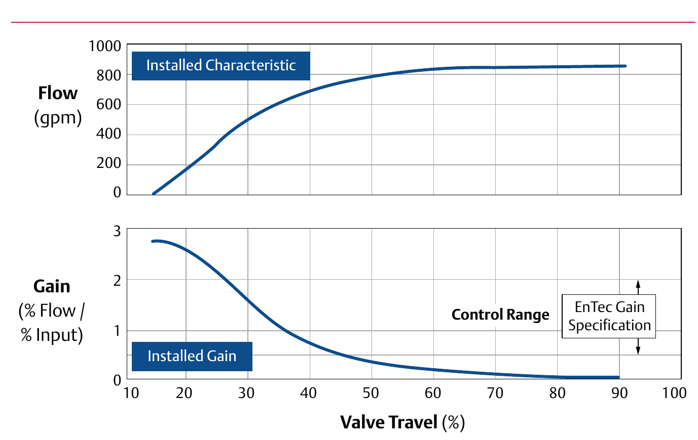

Installed Gain: Slope of the Characteristic Curve

- 1Top: installed characteristic — flow vs. travel for the valve as installed in this loop, not the valve alone
- 2Bottom: installed gain — the top curve's own slope at each point of travel
- 3Where the gain curve falls off steeply (low travel here), the loop's tuning has to compromise between the high- and low-gain regions
After Control Valve Handbook, 6th ed., Fig. 2.5 — used directly. Component Index: cvh-cmp-installed-characteristic-and-gain.